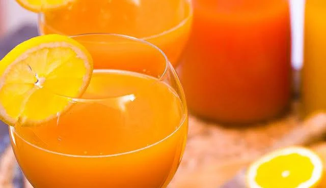

Punch
Le punch est une boisson festive et rafraîchissante, souvent servie lors de grandes occasions ou de fêtes. Il se compose généralement d'un mélange de rhum, de jus de fruits et d'épices, offrant une expérience gustative riche et exotique. Le punch est apprécié pour sa capacité à rassembler les gens autour d'une boisson conviviale et colorée.
Recette complète
Ingrédients
- 1 litre de rhum blanc agricole (50°)
- 1 litre de jus d'orange
- 1 litre de jus d'ananas
- 1 litre de jus de goyave ou de mangue
- 1 jus de citron vert frais
- 2 verres (environ 200 ml) de sirop de sucre de canne
- 1 gousse de vanille
- 1 pincée de cannelle et de muscade
Préparation
- Mélanger : Dans un grand saladier ou une cocotte, versez le rhum blanc, les différents jus de fruits et le sirop de sucre de canne.
- Parfumer : Fendez la gousse de vanille pour en gratter les graines et ajoutez-les au mélange avec la cannelle, la muscade et le jus de citron vert.
- Faire reposer : Laissez macérer au réfrigérateur pendant 12 heures minimum (idéalement 24 h) pour que les arômes se lient parfaitement.
- Service : Ne mettez jamais les glaçons directement dans le grand récipient pour éviter de diluer le punch ; déposez-les directement dans chaque verre.
